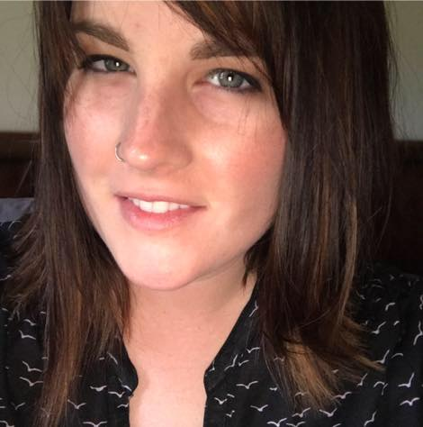

Kristin Ballew's E-Portfolio

Hello,
I started my journey here at Wayne State University in 2016. After working in a library since 2006, I realized that I wanted to make a career out of it. While I knew a lot about libraries from my time spent in working in them, this program has helped me refine my abilities and add a few new ones to my skill set. I am truly thankful for the education I have obtained at Wayne State University and look forward to my career as a professional librarian.